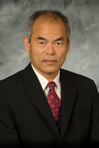

Shuji Nakamura and the blue LED
I choose Shuji Nakamura mainly because of his earlier experience and the blue LED. The invention is famous, but the work behind it, and how his company treated that work, are what interest me most.
Before the blue LED
Nakamura studied electrical engineering at the University of Tokushima and joined Nichia in 1979. It was a small chemical company, with limited equipment for his early experiments. His Nobel biography describes repairing old parts and working with quartz tubes. Later, he learned MOCVD, a method for growing semiconductor layers, at the University of Florida. Building and changing the equipment became part of his research.
The invention
Red and green LEDs already existed, but efficient blue LEDs were much harder to make. Nakamura worked with gallium nitride, and Nichia announced his bright-blue LED in 1993. This development made energy-saving white LED lighting possible. He shared the 2014 Nobel Prize in Physics with Isamu Akasaki and Hiroshi Amano. Their contributions matter too; this was not a breakthrough made by one person alone.
Credit and compensation
After leaving Nichia, he disputed the compensation for his inventions. The 2005 settlement totaled ¥843.91 million, including interest, and covered his inventions at the company. This is the part about working with a boss that also interests me. A device can become successful while the people behind it still have to fight over recognition and payment.
Why I chose him
I admire his practical skill and persistence. He kept working on a difficult material, then turned the result into something used in everyday lighting. His earlier experience also shows why research needs equipment, funding, and people willing to support uncertain ideas. For me, the tech hero story should include those conditions. Just listing the invention and the Nobel Prize leaves too much of the actual work out.
The video
Why It Was Almost Impossible to Make the Blue LED
Sources
- Wikipedia: Shuji Nakamura
- Nobel Prize: Biography
- Nobel Prize: 2014 award
- Nichia: Settlement announcement
Photo: MEXT via Wikimedia Commons, CC BY 4.0. Displayed as a square portrait.